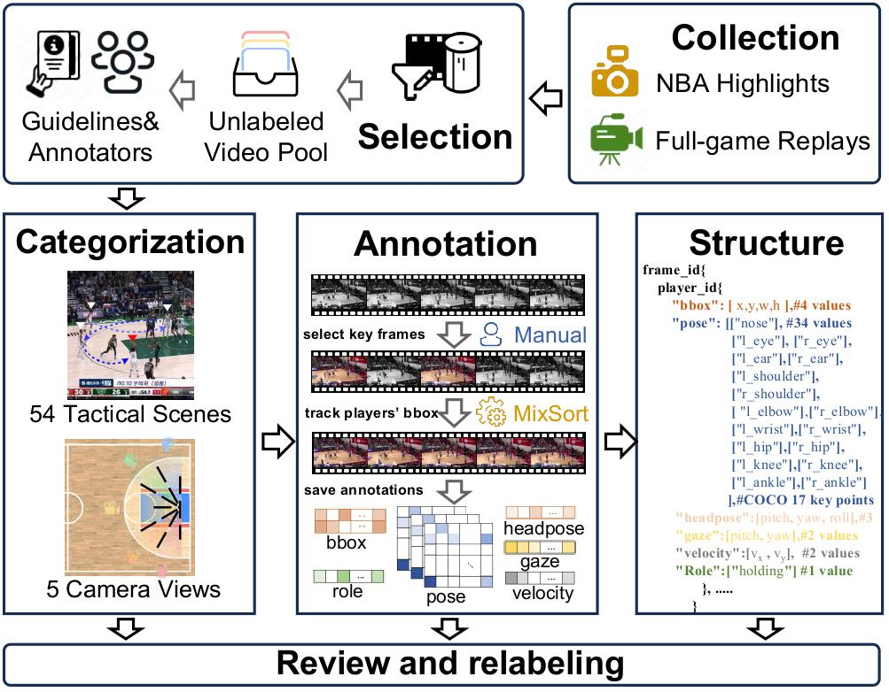

Beyond the Individual: Introducing Group Intention Forecasting with SHOT Dataset
1School of Computer Science, Wuhan University
2Peking University
3School of Computing, National University of Singapore
4Wuhan University of Technology
2Peking University
3School of Computing, National University of Singapore
4Wuhan University of Technology
Technical Report

Overview. (a) Group Intention Forecasting task
forecasts the occurrence time of group intentions by observing individual actions and interactions in early time; (b)The SHOT
dataset provides 5 camera views videos and is annotated with 6 multi-individual attributes to describe the multi-level intention,
including the group intention and the individual intention..
Abstract
Intention recognition has traditionally focused on individual intentions, overlooking the complexities of collective intentions in group settings. To address this limitation, we introduce the concept of group intention, which represents shared goals emerging through the actions of multiple individuals, and Group Intention Forecasting (GIF), a novel task that forecasts when group intentions will occur by analyzing individual actions and interactions before the collective goal becomes apparent. To investigate GIF in a specific scenario, we propose SHOT, the first large-scale dataset for GIF, consisting of 1,979 basketball video clips captured from 5 camera views and annotated with 6 types of individual attributes. SHOT is designed with 3 key characteristics: multi-individual information, multi-view adaptability, and multi-level intention, making it well-suited for studying emerging group intentions. Furthermore, we introduce GIFT (Group Intention ForecasTer), a framework that extracts fine-grained individual features and models evolving group dynamics to forecast intention emergence. Experimental results confirm the effectiveness of SHOT and GIFT, establishing a strong foundation for future research in group intention forecasting.
Dataset Pipeline


Pipeline Overview. Collection: videos are sourced from NBA highlights and full-game replays, then compiled into an unlabeled pool. Categorization: clips are classified by camera view and tactical type. Annotation: features are labeled manually or via tracking models. Structure: video annotations are stored in a JSON file with this structure. Review: annotations are reviewed and relabeled as needed.
Comparison. Comparison of the proposed SHOT dataset with existing datasets. SA: Sports Analysis, II: Individual Intention, GIF: Group Intention Forecasting.
Method
Method Overview. GIFT extracts bounding box, pose, gaze, headpose, velocity, and role features from the τ seen frames (τ ∈ {1, 2, ..., T}). The STGCN Encoder models spatial and temporal patterns. The STGCN Decoder forecasts future features, from which the shooting role is identified to determine the frame number.
Results

Experimental Results. Quantitative comparison of leading methods on SHOT. Best performances are highlighted in bold.
Video Clip Selection
Illustration of the video clip selection process using LosslessCut. Shooting clips are manually trimmed by identifying their start and end time points, then exported for further processing.
View Categorization

Illustration of View1--View5. Views 1, 2, 4, and 5 each span 30°, while View 3 covers the central 60°.
Tactic Categorization

Illustration of the tactic categorization process. Keywords observed in the video are selected and confirmed for saving.
Dataset Statistics
Number of videos for home NBA teams. Colors indicate different NBA divisions, with each box labeled by the team's abbreviation.
Full version of tactical statistics. "1" and "M" denote "One" and "Multi", respectively; "P" and "D" represent "Pass" and "Drive"; while "ST", "LY", and "DK" correspond to "Shoot", "Layup", and "Dunk".
Video Examples
Additional video examples from SPOT dataset. Examples are selected from various camera views and tactic combinations. Each video clip is represented by multiple frames, illustrating the shooting progression.